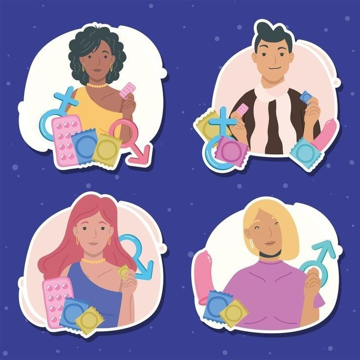
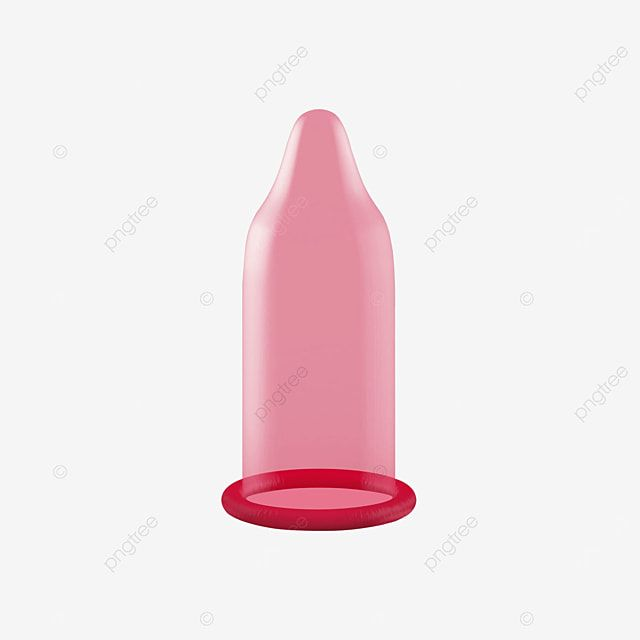
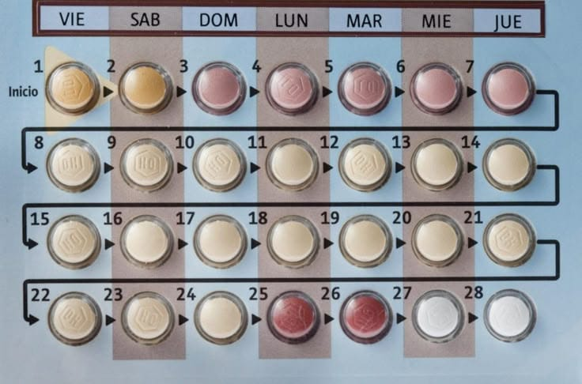
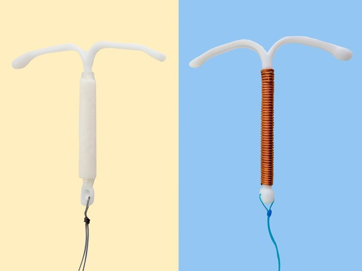
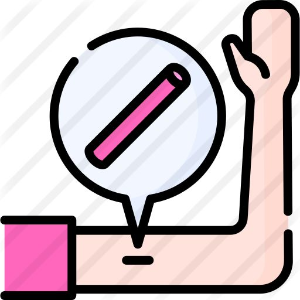
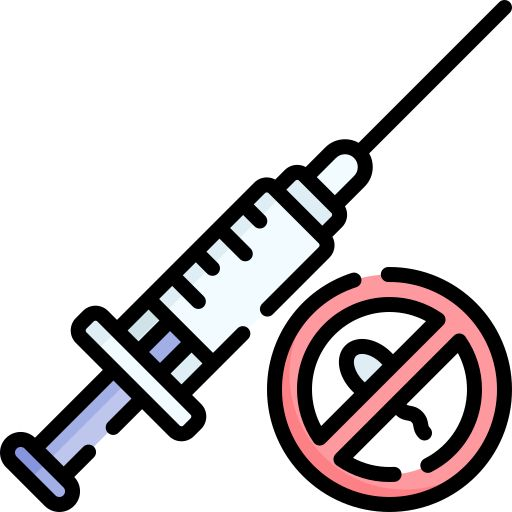
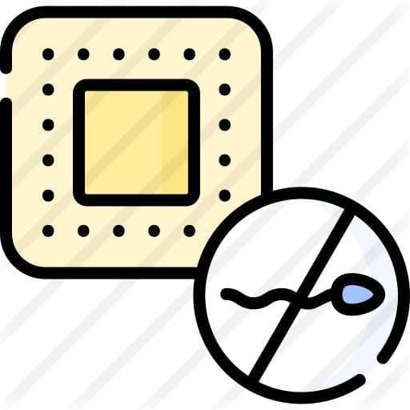

❮
❯
Sexualidad
La sexualidad es algo natural del ser humano. No se trata solo del sexo, sino también del cuerpo, las relaciones y el consentimiento. Esta página busca brindar información clara, sin juicios ni tabúes, para que puedas conocerte mejor, tomar decisiones informadas y cuidarte a ti y a los demás.
Educación Sexual Integral
La educación sexual integral proporciona conocimientos sobre el cuerpo, el consentimiento, las emociones, el respeto a la diversidad, la prevención de infecciones, y la toma de decisiones libres e informadas. Promueve el bienestar y la igualdad, sin prejuicios.
A CONTINUACIÓN OBSERVAREMOS
La comparación de datos sobre anticonceptivos, embarazos y enfermedades en adolescentes.

Gráfica Comparativa de Datos
Cuerpos y salud sexual
Conocer tu cuerpo es clave para vivir tu sexualidad de forma sana y segura. Aprender sobre los órganos sexuales, la higiene íntima, el ciclo menstrual, la eyaculación, el deseo y los cambios hormonales te ayuda a cuidarte y sentirte bien contigo mismo/a.
Orientación sexual e identidad de género
La orientación sexual es hacia quién sientes atracción (hetero, homo, bi, pan, etc.). La identidad de género es cómo te sientes y te identificas (mujer, hombre, trans, no binarie, etc.). Cada persona es única y merece respeto y libertad para ser quien es.
Afecto y vínculos sanos
Amar, cuidar y relacionarse son parte de la sexualidad. Las relaciones sanas se basan en el respeto, la comunicación y el consentimiento. No hay una sola forma de amar, pero toda relación debe hacerte sentir seguro/a, libre y valorado/a.
Métodos anticonceptivos
Existen muchos métodos para evitar embarazos no deseados y cuidar la salud. Elegir el adecuado depende de tu cuerpo, estilo de vida y necesidades. Aquí algunos ejemplos:

🧴 Preservativo (masculino y femenino)
Crea una barrera física que impide que los espermatozoides lleguen al óvulo. Protege también contra ITS.
💊 Pastillas anticonceptivas
Contienen hormonas que evitan la ovulación. Deben tomarse diariamente y a la misma hora.
🌀 DIU (dispositivo intrauterino)
Es un dispositivo pequeño que se coloca en el útero. Puede ser hormonal o de cobre y actúa por varios años.
🪛 Implante subdérmico
Es una varilla pequeña que se coloca bajo la piel del brazo y libera hormonas por hasta 3 años.
📎 Parche hormonal
Se pega a la piel y libera hormonas que previenen la ovulación. Se cambia semanalmente.
💉 Inyecciones anticonceptivas
Se aplican cada 1 o 3 meses y liberan hormonas para evitar la ovulación.
⚪ Anillo vaginal
Se coloca dentro de la vagina y libera hormonas. Se deja tres semanas y se retira una.
⏳ Pastilla del día después (emergencia)
Previene o retrasa la ovulación. Debe tomarse lo antes posible después de una relación sin protección.
informacion de algunos anticonceptivos

Condón Masculino
Efectividad: 85%-98%
Se coloca en el pene erecto antes del contacto sexual.

Píldora Anticonceptiva
Efectividad: 91%-99%
Se toma diariamente a la misma hora. Evita la ovulación.

DIU
Efectividad: 99%
Dispositivo en el útero que previene la fecundación.

Implante Subdérmico
Efectividad: 99%
Pequeña varilla bajo la piel del brazo. Libera hormonas.

Inyección Anticonceptiva
Efectividad: 94%
Aplicación hormonal mensual o trimestral en el glúteo.

Parche Anticonceptivo
Efectividad: 91%
Se adhiere a la piel y libera hormonas por 7 días.
Consulta siempre a un profesional de salud para encontrar el método que mejor se adapte a ti.
Infecciones de Transmisión Sexual (ITS)
Las ITS son enfermedades que se transmiten por contacto sexual sin protección. Muchas no presentan síntomas al principio, por eso es clave hacerse pruebas periódicas.
🦠 VIH (Virus de la inmunodeficiencia humana)
Ataca el sistema inmunológico. Se transmite por relaciones sexuales sin protección, sangre y de madre a hijo. No tiene cura, pero con tratamiento se puede vivir bien.
💉 Clamidia
Es causada por una bacteria. Muchas veces no presenta síntomas. Se trata con antibióticos y puede causar infertilidad si no se trata.
💊 Gonorrea
Infección bacteriana que puede afectar genitales, recto y garganta. Suele tratarse con antibióticos. Puede ser asintomática.
🩸 Sífilis
Infección bacteriana con varias etapas. Puede causar daños graves si no se trata. Se transmite por contacto sexual y de madre a bebé.
🎗️ VPH (Virus del Papiloma Humano)
Muy común. Algunos tipos pueden causar verrugas genitales y otros, cáncer. Existe vacuna preventiva. Suele no presentar síntomas.
😷 Herpes genital
Causado por el virus del herpes simple. Provoca ampollas o llagas dolorosas. No tiene cura, pero se puede controlar.
🔬 Tricomoniasis
Infección causada por un parásito. Puede causar picazón, secreción y mal olor. Se trata con medicamentos antiparasitarios.
🦠 VIH (Virus de la inmunodeficiencia humana)
Ataca el sistema inmunológico. Se transmite por relaciones sexuales sin protección, sangre y de madre a hijo. No tiene cura, pero con tratamiento se puede vivir bien.
💉 Clamidia
Es causada por una bacteria. Muchas veces no presenta síntomas. Se trata con antibióticos y puede causar infertilidad si no se trata.
💊 Gonorrea
Infección bacteriana que puede afectar genitales, recto y garganta. Suele tratarse con antibióticos. Puede ser asintomática.
🩸 Sífilis
Infección bacteriana con varias etapas. Puede causar daños graves si no se trata. Se transmite por contacto sexual y de madre a bebé.
🎗️ VPH (Virus del Papiloma Humano)
Muy común. Algunos tipos pueden causar verrugas genitales y otros, cáncer. Existe vacuna preventiva. Suele no presentar síntomas.
😷 Herpes genital
Causado por el virus del herpes simple. Provoca ampollas o llagas dolorosas. No tiene cura, pero se puede controlar.
🔬 Tricomoniasis
Infección causada por un parásito. Puede causar picazón, secreción y mal olor. Se trata con medicamentos antiparasitarios.
Usar preservativo es una forma muy efectiva de prevención. El tratamiento temprano evita complicaciones graves.